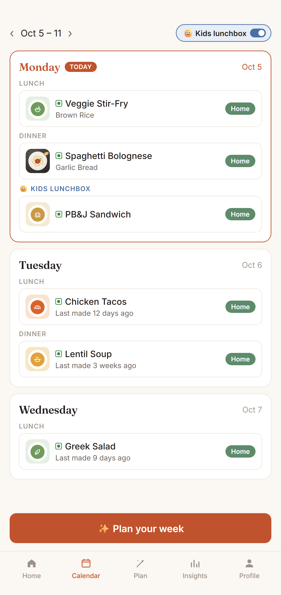

Kids lunchboxes get their own track in Sofra, planned from your kids' own favourites on school days.

Flip the Kids lunchbox switch and every school day gets a lunchbox slot, separate from family meals.
Auto-plan picks from dishes your kids have had before and avoids repeating one within the week.
Home reminds you when tomorrow's lunchbox isn't planned, and flags a lunchbox packed three times in a week.
Star your kids' favourite lunchboxes and Sofra suggests them more often.
Turn on the Kids lunchbox switch in Plan and generate the week. Sofra fills school days from your kids' own dishes.
Sofra won't repeat a lunchbox within the week when you have enough dishes, and warns you when one comes up three times.
No. Lunchboxes are planned on school days only; you can still add one for any day by hand.
No. Pack any food from any cuisine — sandwiches, wraps, pasta, rice, anything your kids enjoy.
Free, no ads, private to your family. On iPhone and Android.